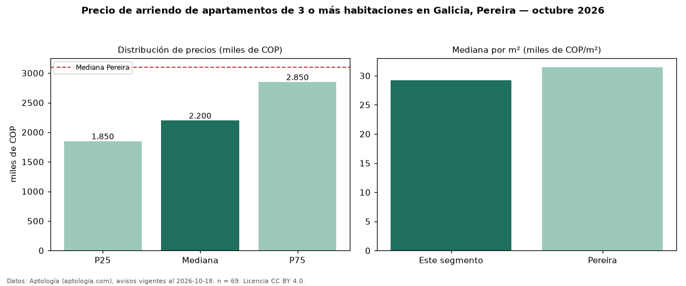

Precio de arriendo de apartamentos de 3 o más habitaciones en Galicia, Pereira — octubre 2026
Con 69 avisos vigentes, el canon mediano de apartamentos de 3 o más habitaciones en arriendo en Galicia, Pereira es COP 2,20 millones al mes. Frente a la mediana de Pereira para apartamentos de 3 o más habitaciones (COP 3,10 millones), queda 29 % por debajo. Por metro cuadrado, la mediana es COP 29.231/m² al mes (n = 69 avisos con área), 7 % por debajo de Pereira (COP 31.461/m²). Son 78 % de los 89 avisos de apartamentos en arriendo de la zona, cuya mediana general es COP 2,20 millones (+0 %). Con el precio por m² de venta del mismo segmento (COP 5,69 millones/m²), la rentabilidad bruta implícita es 6,2 % anual (aproximación con medianas de ofertas distintas). El área mediana anunciada es 72 m². La administración mediana declarada es COP 324.000 al mes (n = 38), aparte del canon. El estrato más frecuente es 5 (64 % de los avisos con estrato). Datos: Aptología (aptologia.com), CC BY 4.0 — https://www.aptologia.com/arriendo/pereira/galicia. Archivos: PDF, CSV con las cifras y gráfica PNG.

| Avisos únicos | 69 |
|---|---|
| Percentil 25 | COP 1.850.000 |
| Mediana | COP 2.200.000 |
| Percentil 75 | COP 2.850.000 |
| Mediana por m² | COP 29.230 |
Fuente: avisos vigentes de portales inmobiliarios recopilados por Aptología, deduplicados (mínimo 30 avisos únicos por celda). Precios pedidos, no cerrados. Fecha: 2026-10-18.